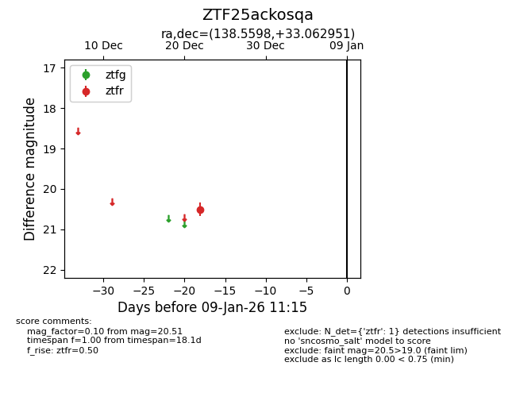
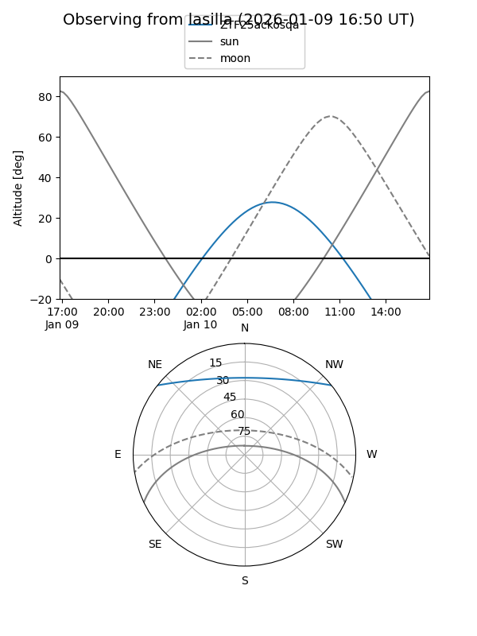
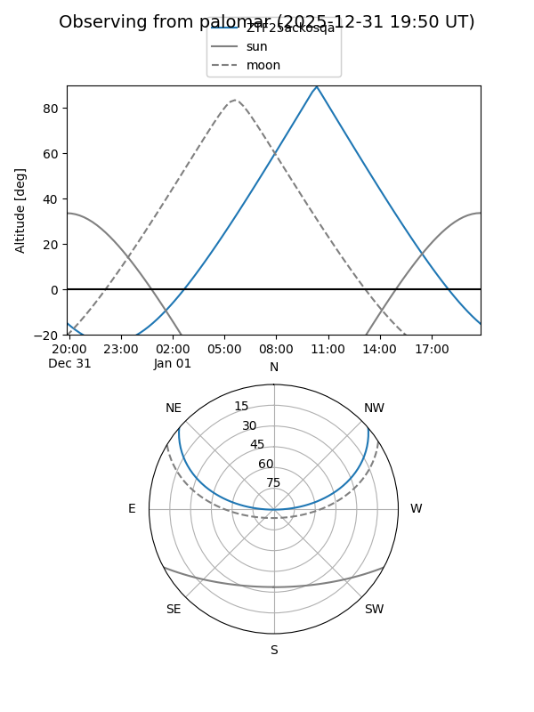

ZTF25ackosqa
Target ZTF25ackosqa at 2025-12-31 18:00
Aliases and brokers:
FINK: link
Lasair: link
ALeRCE: link
alt names
ZTF25ackosqa (ztf,fink_ztf)
Coordinates:
equatorial (ra, dec) = 138.5598,+33.06295
equatorial (HMS+DMS) = 09:14:14.36,+33:03:46.62
galactic (l, b) = (191.8373,+43.15846)
Flags:
Photometry:
last ztfr=20.51
1 ztfr detections
Lightcurve

Visibility


Additional plots